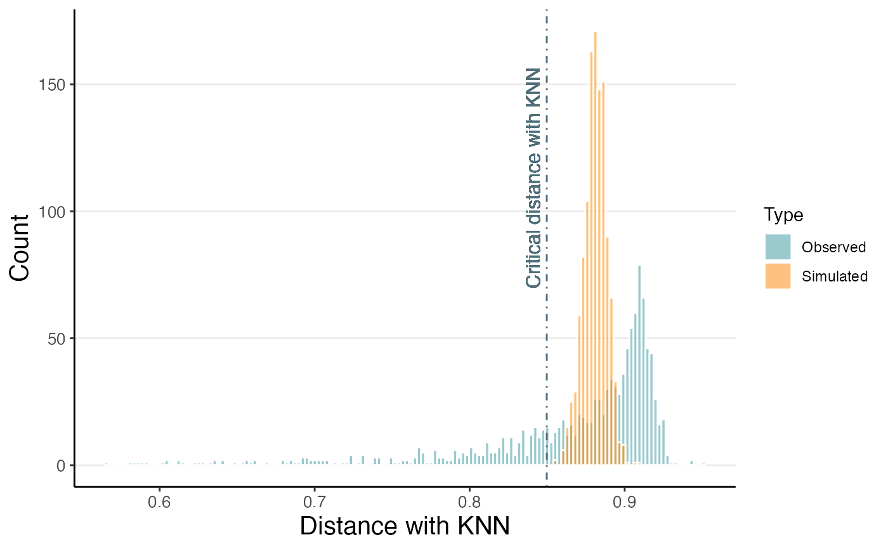

This function creates a histogram of the simulated and observed distances of a ClusterSet object.
plot_dist(
object,
bins = 150,
alpha = 0.5,
colors = c(Simulated = "#FB8500", Observed = "#36949D"),
xlim = NULL,
vline_color = "#4f6d7a",
text_size = 4,
text_hjust = -0.8,
text_vjust = -0.5
)A ClusterSet object.
The number of bins to use in the histogram (default is 150).
The level of transparency for the bars in the histogram (default is 0.5).
A named vector of colors to use for the histograms, with "Simulated" and "Observed" as the named elements (default is c("Simulated" = "#FB8500", "Observed" = "#36949D")).
Limits for the x axis of the histogram (e.g. c(0.8, 1)).
Color of the vertical line indicating the critical distance with KNN.
Font size for the label of the critical distance.
Horizontal justification for the label of the critical distance.
Vertical justification for the label of the critical distance.
A ggplot object.
# Set verbosity to 1 to display info messages only.
set_verbosity(1)
# Load datasets
load_example_dataset('7871581/files/pbmc3k_medium_clusters')
#> |-- INFO : Dataset 7871581/files/pbmc3k_medium_clusters was already loaded.
plot_dist(pbmc3k_medium_clusters)
